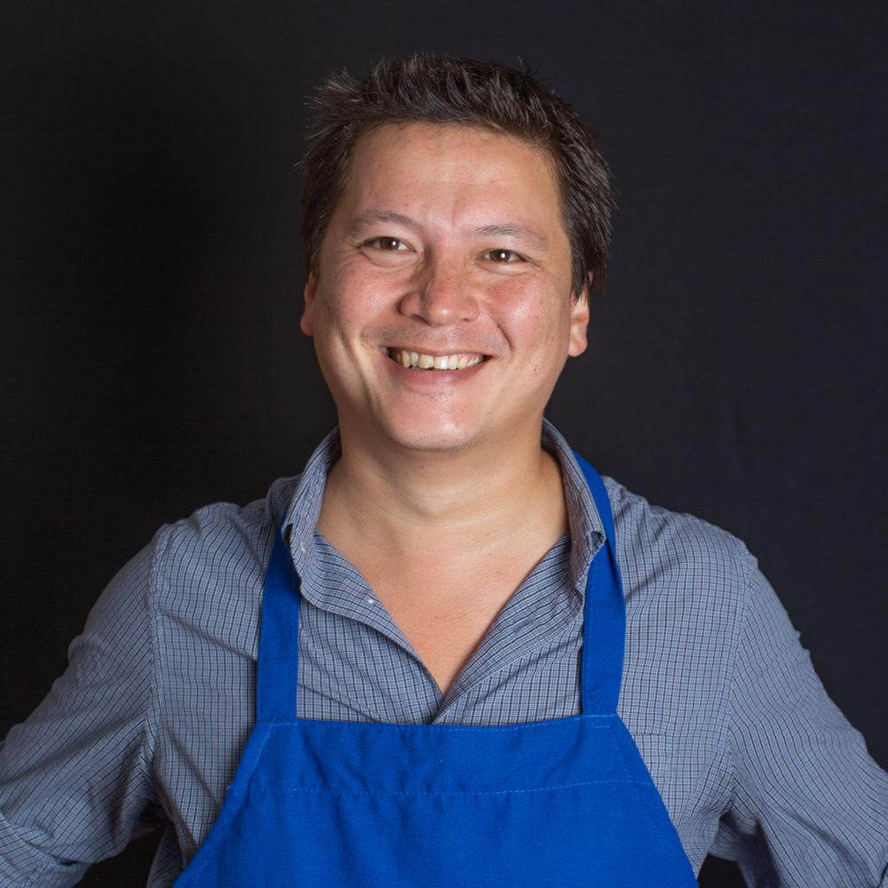

*Disclaimer* none of these people are actually staff members nor did they write any of the articles here but they're people who were very influential to me in my cooking career and this was a fun way to pay tribute to them
J Kenji-Lopez Alt
I spend the majority of my time with my toddler. My first children’s book, Every Night is Pizza Night, is out on 9/1/2020. I’m also a New York Times food columnist, and the Chief Culinary Advisor for Serious Eats, home of the best, most thoroughly-tested and explained recipes and food features, well, pretty much anywhere. Additionally, I’m the chef (and a partner) at Wursthall in San Mateo, a German-inspired California beer hall and restaurant. You can try some of my food there. I’m also a huge fan of Backhaus, a San Mateo bakery specializing in naturally-leavened sourdough, pretzels, and European-style pastries (full disclosure: I have financially involvement with their business). I live in San Mateo with my wife Adriana, my daughter Alicia, and our two dogs, Jamón and Shabu.
People ask me about my name. My mother is Japanese and my father is American of German descent. My parents named me James Kenji Alt. I have always gone by Kenji. When my wife, Adriana López, and I got married, we both changed our last names to López-Alt. I am not latino in any way, though I do visit Colombia at least once a year and love food from all over Latin America.
 Roy Choi
Roy Choi
Roy Choi was born in Seoul, Korea and raised in Los Angeles, California. Choi is known as one of the architects of the modern food truck movement through Kogi BBQ by merging food and social media with community and honoring the street food culture that laid the path before him, and for his civic minded TV show ‘Broken Bread’ on KCET/Tastemade, which in 2020 won him a James Beard Foundation Award for Outstanding Host in a television series. On a global scale, Roy is co-host in the full blown Netflix cooking series ‘The Chef Show’ with Jon Favreau. He is a graduate of the Culinary Institute of America. In 2010, Food and Wine magazine named him Best New Chef. His cookbook/memoir L.A. Son was a NY Times Bestseller in 2013. In 2016 he was named TIME 100 Most Influential People in the World. And in 2017, LocoL in Watts, received the first ever LA Times Restaurant of the Year award. Roy resides in Los Angeles where he is a voice and advocate for street food culture past, present, and future, and the co-owner, co-founder, and chef of Kogi BBQ, Chego!, Best Friend at Park MGM Las Vegas, and LocoL.
 Matty Matheson
Matty MathesonMatthew James Matheson is a Canadian chef and internet personality. He was the executive chef of Parts & Labour, a restaurant located in Toronto, Canada, which permanently closed on January 1, 2019. Matheson regularly appeared on Vice's show Munchies.